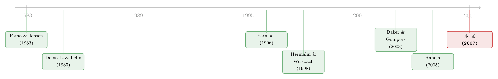

董事会不是越大越好，也不是越独立越好——一份从 IPO 追踪十年的「成长账本」
本文读的是 Boone, Field, Karpoff & Raheja (2007, Journal of Financial Economics)：他们手工追踪 1,019 家公司从 IPO 到上市十年后的董事会演变，发现董事会的规模和独立性并非外界呼吁的「越大越好、越独立越好」，而是随公司成长、监督成本、以及 CEO 与外部董事的谈判力一起内生变化——但即便把这三股力量全摆上桌，董事会结构里仍有一大块「说不清」的特质成分。
1 一个被「规范」绑架的问题
打开任何一份公司治理改革的倡议书，你都会读到几乎雷同的两句话：董事会应该更小，应该更独立。机构股东服务公司 (Institutional Shareholder Services)、机构投资者理事会 (Council of Institutional Investors)、TIAA-CREF……它们异口同声，最后这些主张甚至被写进了 2002 年的《萨班斯-奥克斯利法案》（Sarbanes-Oxley Act）——比如要求审计委员会必须全部由独立外部董事构成。
但这里藏着一个被很多人跳过的前提：如果「更小、更独立」是普适的好，那为什么现实中的董事会千差万别？有的公司六个人，有的公司十几个人；有的清一色外部独立董事，有的董事会里坐满了创始人的旧部。难道这些差异全是治理失败的痕迹吗？
这正是本文要顶回去的地方。作者们的立场很「芝加哥」：董事会结构不是天上掉下来的规范，而是公司在各自的成长阶段、信息环境、权力格局里算出来的均衡解。要验证这一点，你需要的不是又一张某一年大公司的横截面照片，而是一部电影——看着同一批公司从呱呱坠地一路长大，董事会如何随之变形。
这条「董事会是内生的制度」的思路，本博客此前在另一篇里也聊过——参见《代理问题没有标准答案：一部「公司治理」的发明史》。本文是它在数据上的一次扎实落地。
2 三个假说：把零散的理论收进一张表
文章最聪明的「工程」动作，是把过去二十年关于董事会的零散理论，归并成三个互不排斥、但各有可证伪预测的假说，全部摊在 Table 1 里。
第一，经营范围假说（the scope of operations hypothesis）。 这一支源自 Fama 和 Jensen (1983)：公司越大、业务越复杂，管理层的决策越需要被「批准与监督」，于是需要更大、更专业化的董事会，把审计、薪酬、继任规划等任务分给专门委员会。它预测：公司规模、年龄、业务分部数 (number of business segments) 越高，董事会规模和独立董事占比都会上升。注意——这里两个维度同号。
第二，监督假说（the monitoring hypothesis）。 这一支借了 Demsetz 和 Lehn (1985) 关于「经营环境噪声影响监督成本」的想法，被 Raheja (2005) 和 Harris 与 Raviv (2007) 写成了正式模型。核心是一句话：加一名董事，是一桩有成本也有收益的买卖。 当管理层攫取私利的空间越大（监督的收益高），就该多上董事；当监督越困难、信息越不透明（监督的成本高），就该少上董事。
第三，谈判假说（the negotiation hypothesis）。 这一支来自 Hermalin 和 Weisbach (1998)：董事会的独立性不是设计出来的，而是 CEO 和外部董事讨价还价的结果。一个无可替代、能为公司创造剩余的强势 CEO，会用自己的影响力把空缺的董事席位塞进自己人或关联外部人，从而压低独立性。Kieschnick 和 Moussawi (2004) 补了一句：机构投资者的影响力会把独立性扳回来。
把三者并排，预测的差异就浮出来了。比如 CEO 持股，监督假说说它降低董事会规模（持股本身就是激励，私利空间小，少监督），谈判假说说它降低独立董事占比（持股=影响力）。同样一个变量，两个假说指向董事会的不同维度——这恰恰让数据有机会把它们分开。
3 识别策略：为什么偏要盯着「刚出生」的公司
这篇文章的「识别」不靠某个外生冲击，而靠研究设计本身：用一个新生公司的长面板，把董事会的「演化」和「内生性」一起逼到台前。
接着，一个自然的问题是：要检验这三个假说，该去哪里找数据？过去的董事会研究——Yermack (1996)、Denis 和 Sarin (1999)、Gillan, Hartzell 和 Starks (2004)——几乎都盯着大型、成熟的公司。Hermalin 和 Weisbach (2003) 在综述里专门点出过这个隐忧：我们对董事会的认识，可能只是「老公司」的认识。
本文的破法，是把镜头对准IPO 这个起点。样本是 1988–1992 年间在美国上市的全部工业类公司，要求普通股发行价不低于 $1.00、采用包销 (firm-commitment) 协议、在美国注册、并在发行后三个月内被 CRSP 收录——剔除金融机构、REITs 和封闭式基金后，得到 1,019 家 IPO。然后作者们手工 (hand-collected) 收集每家公司在 IPO 当年、第 1、4、7、10 年的董事会与持股数据：IPO 当年来自招股说明书，之后来自委托投票说明书 (proxy statements)。
为什么这个设计是「关键的一步」？三个理由：
- 它天然带时间维度。 同一家公司随年龄成长，董事会怎么变，是直接可观测的，而不是靠不同公司的横截面去拼凑。这让「经营范围假说」中那句「公司一长大，董事会就跟着长」可以被直接看见。
- IPO 是治理大变样的时刻，且更可能是「价值最大化」的选择。 Baker 和 Gompers (2003) 说 IPO 前后是研究董事会的富矿；Gertner 和 Kaplan (1996) 更进一步：正在做公开发行的公司，因为卖股的内部人要直接承担治理安排的财务后果，所以更可能挑选价值最大化的治理结构。换句话说，IPO 时点的董事会，离「最优解」更近，噪声更少。
- 它直面内生性。 董事会规模和独立性是同时被决定的，互为因果，还和公司特征纠缠。作者们利用面板结构、并对董事会规模与独立性的联立内生性做了控制（Appendix A 还报告了一系列对代理变量和方法选择的稳健性检验）。
当然，硬币有另一面：样本只含上市不满十年的公司。如果驱动年轻公司和老公司董事会的力量本质不同，结论就未必能外推到上市几十年的「老字号」——这件事 Lehn, Patro 和 Zhao (2005) 用长期存续公司另作了研究。作者自己也坦白了这个边界。
4 数据先讲了半个故事
在跑任何回归之前，描述性事实本身就已经很有说服力。
董事会确实在长大，且长出来的几乎全是独立董事。 平均董事人数 (Number of Directors) 从 IPO 当年的 6.21 稳步升到第十年的 7.52；外部董事占比从 62% 升到 74%，其中真正无关联的独立董事 (unaffiliated) 从 56% 升到 69%，而内部人占比一路降到第十年的 26%。关联外部董事 (affiliated/grey) 始终在 5%–7% 之间打转。这条「随年龄上升」的轨迹，正是经营范围假说预言的样子。
与此同时，内部人的「钱」在退场。 高管与董事合计持股从 IPO 的 52% 跌到第十年的 25%；CEO 持股从 16% 跌到 7%；外部董事持股从 26% 跌到 11%。有意思的是，5% 大股东 (blockholders) 的合计持股十年间稳稳停在 30% 左右，人数也大约始终是三个。
把这批年轻公司和 Denis 和 Sarin (1999) 的成熟公司样本一比，反差极鲜明：本文 IPO 公司 IPO 时平均股权价值仅 $150.2 百万（对方 $434.6 百万），负债率更低（35% vs 56%），研发支出占比更高（11% vs 1.58%）。一句话——这是一群小、靠股权融资、且重研发的年轻公司，它们的董事会比成熟公司小（哪怕十年后 7.52 仍低于成熟样本的 9.35 或 9.44），独立董事比例却更高。这恰恰说明：把成熟公司的董事会当成「标准答案」，本身就是一种偏误。
5 主要结果：三个假说，各得一半
本文 Section 5 的具体回归系数未包含在我们手上的正文节选里，因此下面只报告作者明确陈述的关系方向与显著性结论，以及可直接读到的描述性量级，不臆造任何系数或 t 值。
然后是真正的检验。结果是一种漂亮的「三分」——三个假说都各拿到了证据，但落点不同。
(i) 经营范围假说：两个维度都成立。 公司规模、年龄、业务分部数都同时正向预测董事会规模与独立董事占比。公司一长大、一多元化，董事会既变大、也变独立。这块证据干净利落。
(ii) 监督假说：只在「规模」上成立，「独立性」上失灵——这是全文最大的反转。 董事会规模与内部人私利的代理变量正相关（行业集中度 industry concentration、反收购条款的 G-index），与监督成本的代理变量负相关（市账比 market-to-book、研发支出 R&D、股票日收益率方差 return variance、CEO 持股）。这正是 Raheja (2005)、Harris 和 Raviv (2007) 那套「成本-收益权衡」模型的预言。但是——独立董事占比却和监督的成本与收益统统无关。也就是说，「董事会是监督权衡的产物」这句话，只对人数成立，对独立性不成立。
(iii) 谈判假说：独立性的故事在这里。 独立董事占比与 CEO 影响力的度量负相关（CEO 持股、CEO 任职年限 tenure），与约束 CEO 影响力的度量正相关（外部董事持股、IPO 时是否有风险投资 venture capital 在场、以及承销商声誉的 Carter-Manaster 排名）。更妙的是，作者发现这个谈判结果有显著的持续性：CEO 在 IPO 时刻的谈判力，能解释 IPO 数年之后的董事会独立性。换句话说，公司「出生」那一刻的权力格局，会被刻进董事会的基因，多年不褪。
把这三条连起来看，一幅清晰的分工浮现了：董事会的「大小」由监督的经济权衡决定，董事会的「独立性」由 CEO 与外部董事的谈判决定。 外界那句笼统的「更小更独立」，其实把两件由不同力量驱动的事，错当成了一件事。
这里和《董事会的「价值」，藏在一段慢慢平息的波动里》以及《炒掉 CEO，董事是英雄还是「帮凶」？》是同一片土壤——前者讲董事价值如何被市场逐步学习，后者讲董事独立性在 CEO 更替中的作用。本文则告诉你这些独立董事一开始是怎么「谈」进董事会的。
6 但别忘了那块「说不清」的残差
不过，真正让这篇文章诚实可敬的，是它没有把话说满。作者反复强调：即便三个假说一起上，横截面里仍有一大块变异无法被解释。 经济因素能解释董事会结构的一部分，但剩下的是一个庞大的「特质 (idiosyncratic) / 未解释」成分。
这句看似谦逊的结论，其实是对治理改革思路的一记敲打：如果连掌握全部经济变量的研究者都解释不了大半的董事会差异，那么一刀切地强推「最优董事会模板」，很可能是在用一个并不存在的标准答案，去强行抹平公司之间本就合理的异质性。
7 文献脉络
把这条线捋一遍，你会看到它如何从「理论猜想」一步步走向「可检验的实证」。
最早是 Fama 和 Jensen (1983) 把董事会放进「所有权与控制权分离」的框架，给了「范围决定结构」的种子；Demsetz 和 Lehn (1985) 则种下了「环境噪声影响监督成本」的另一颗种子。接着，实证派登场——Yermack (1996) 发现小董事会的公司估值更高，掀起了「董事会规模」的经验研究热潮；Hermalin 和 Weisbach (1998) 换了个角度，提出董事会独立性是 CEO 与外部董事谈判的内生结果，这是「谈判假说」的源头。
然后，IPO 这个特殊时点被 Baker 和 Gompers (2003) 挖掘出来作为研究董事会的天然实验场。与此同时，理论侧由 Raheja (2005) 把「监督的成本-收益权衡」正式建模，Harris 和 Raviv (2007) 进一步扩展。

本文站在哪里？它是第一个用一整条从 IPO 到十年后的长面板，把上述三股理论力量同时摆上检验台、并明确区分「规模」与「独立性」两个维度的实证研究。它的贡献不在提出新理论，而在用一份独一无二的数据，给这些理论各自划定了适用的边界。
评论与延伸（Q&A + 研究方向）
（a）几个可能的疑问
Q：监督假说和谈判假说都预测「CEO 持股 → 独立性下降」，怎么区分谁对？
作者很坦诚：这一条无法把两者分开，他们把它解读为同时支持两个假说。真正用来区分的是别的变量——比如行业集中度、市账比、研发只进入了董事会规模的方程而非独立性方程，这才把「独立性由监督权衡决定」的说法证伪，留下谈判假说独挑大梁。
Q：「更小更独立的董事会更好」这个流行观点，被本文推翻了吗？
没有被推翻，而是被重新定位了。本文不研究董事会结构与公司业绩的关系（监督假说本就不预测更大/更独立=更好业绩）。它说的是：现存的规模与独立性差异，大多能用经济权衡和谈判力解释，因而未必是「需要被纠正的偏离」。这对一刀切的规范是个警告，但不等于说独立性无用。
Q：只看上市十年内的年轻公司，结论能推广到成熟大公司吗？
这是最实在的外部效度担忧，作者自己也承认。如果驱动年轻公司董事会的力量与老公司不同，结论就不可外推。他们用 Lehn, Patro 和 Zhao (2005) 对长期存续公司的研究作为互补，但本文的「领地」明确是年轻公司。
Q：手工收集的代理变量（私利、监督成本）会不会其实在量别的东西？
完全可能——这正是这类研究的软肋。比如市账比、研发既是「监督成本」，也是「成长机会」的代理；G-index 既测私利保护，也测管理层防御倾向。Appendix A 用多组替代代理（含外部大股东的存在与持股）做了稳健性，但代理变量的多义性始终是悬顶之剑。
Q：为什么强调 IPO 时点的谈判结果有「持续性」？这件事重要在哪？
因为它说明董事会不是每年重新优化的，而是有路径依赖：出生时强势 CEO 谈下的低独立性，会延续多年。这对「董事会会自动收敛到最优」的乐观假设是一个温和的反例，也提示治理的「初始条件」可能比想象中更重要。
Q：那块「未解释的特质成分」，到底是噪声还是真有内容？
本文无法回答，只能诚实地标注它存在。它可能是测量误差，也可能是真实但不可观测的因素（CEO 个性、董事人脉、公司文化）。这恰恰是后续研究最值得挖的金矿。
（b）几个可能的研究问题与提案
1. 把「未解释的董事会异质性」翻译成可观测特征。 - 【经济故事】本文留下的最大悬念，就是那块庞大的特质残差。如今我们有了董事简历、社交网络、文本化的招股书与 proxy，也许能把当年「说不清」的东西，部分地还原成可测量的人脉、专长与文化变量。 - 【可行性】中。数据可得（BoardEx、招股书全文、LLM 抽取董事背景），但识别难——这些特征本身高度内生于公司选择，最多能做解释力分解而非因果。
2. 外资股东的进入如何重写董事会的「谈判天平」。 - 【经济故事】谈判假说说约束 CEO 影响力的力量会抬高独立性。外资机构（尤其是治理积极的）进入，正是这样一股外生增强的约束力。它们的到来会不会系统性地推高独立董事占比、改变董事会规模？ - 【可行性】中高。可借 MSCI 纳入、QFII 额度放开等外生事件做 DiD。本博客《外资真是「蝗虫」吗？》正是这条外资治理脉络的近邻，识别上有现成范式可借。
3. 把同一套「成本-收益权衡」框架搬到公司债持有人 / 债权人治理。 - 【经济故事】本文只谈股东侧的董事会。但在高杠杆、临近违约的公司里，真正的监督者其实是债权人。债权人对董事会的诉求（席位、独立性）会不会也服从一个对称的「监督成本-收益」权衡？ - 【可行性】中。需要把契约条款、债权人董事席位与信用利差数据匹配，识别可借契约违约 (covenant breach) 这一离散事件。数据拼接是主要门槛。
4. SOX 这类强制独立性的法律，撞上「谈判均衡」会发生什么。 - 【经济故事】既然独立性是谈判出来的内生结果，那么 SOX 强制审计委员会全独立，相当于外生地把均衡往一个方向推。被「推过头」的公司（原本谈判力让它们独立性偏低）会不会在其他维度（董事会规模、委员会构成、关联董事）做出补偿性调整？ - 【可行性】高。SOX 是清晰的时间断点，处理强度可由公司事前独立性距合规线的差距来度量，适合断点 / DiD 设计，数据 (ISS、BoardEx) 成熟。
5. 用 IPO 的「初始董事会」预测十年后的公司命运。 - 【经济故事】本文证明 IPO 时的谈判结果有持续性。那么 IPO 时的董事会结构，能否预测后续的被并购、退市、业绩或诉讼？这把「初始条件」从描述性事实推向了预测性含义。 - 【可行性】高。本文样本的存续/退市原因 (Table 2) 已现成，扩展到结果变量只需匹配 CRSP/Compustat，唯一要小心的是幸存者偏差与内生性。
参考文献
- Baker, M., Gompers, P. (2003). The determinants of board structure at the initial public offering. Journal of Law and Economics 46, 569–598.
- Boone, A. L., Field, L. C., Karpoff, J. M., Raheja, C. G. (2007). The determinants of corporate board size and composition: An empirical analysis. Journal of Financial Economics 85(1), 66–101.
- Coles, J., Daniel, N., Naveen, L. (2007). Boards: Does one size fit all? Journal of Financial Economics (forthcoming).
- Demsetz, H., Lehn, K. (1985). The structure of corporate ownership: Causes and consequences. Journal of Political Economy 93, 1155–1177.
- Denis, D., Sarin, A. (1999). Ownership and board structure in publicly traded corporations. Journal of Financial Economics 52, 187–223.
- Fama, E., Jensen, M. (1983). Separation of ownership and control. Journal of Law and Economics 26, 301–325.
- Gertner, R., Kaplan, S. (1996). The value-maximizing board. Working paper, University of Chicago and NBER.
- Gillan, S., Hartzell, J., Starks, L. (2004). Explaining corporate governance: Boards, bylaws, and charter provisions. Working paper, University of Texas.
- Harris, M., Raviv, A. (2007). A theory of board control and size. Review of Financial Studies (forthcoming).
- Hermalin, B., Weisbach, M. (1998). Endogenously chosen boards of directors and their monitoring of the CEO. American Economic Review 88, 96–118.
- Hermalin, B., Weisbach, M. (2003). Boards of directors as an endogenously-determined institution: A survey of the economic literature. Economic Policy Review 9, 7–26.
- Kieschnick, R., Moussawi, R. (2004). The board of directors: A bargaining perspective? Working paper, University of Texas at Dallas.
- Lehn, K., Patro, S., Zhao, M. (2005). Determinants of the size and structure of corporate boards: 1935–2000. Working paper, University of Pittsburgh.
- Raheja, C. (2005). Determinants of board size and composition: A theory of corporate boards. Journal of Financial and Quantitative Analysis 40, 283–306.
- Yermack, D. (1996). Higher valuation of companies with a small board of directors. Journal of Financial Economics 40, 185–212.